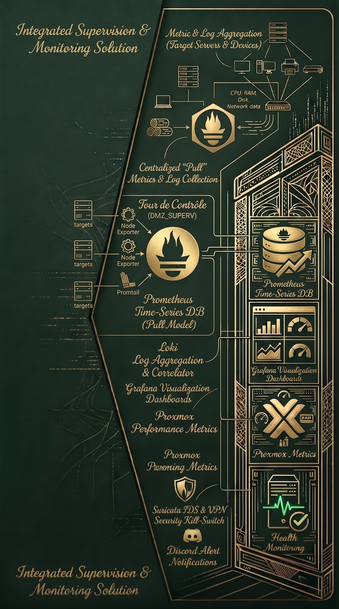

Réalisation 4 : Mise en place d'une solution de supervision
Contexte
Face à la complexité croissante de mon infrastructure et à la multiplication des services virtualisés, il est devenu indispensable d'obtenir une visibilité précise sur l'état de santé des ressources matérielles et logicielles. Pour éviter de piloter mon environnement 'à l'aveugle' et garantir une stabilité optimale, j'ai déployé une stack complète d'observabilité permettant de récolter les métriques de mes serveurs et de mes machines virtuelles et d'afficher les données de télémétrie en temps réel via des tableaux de bord dynamiques.
Objectifs
- Déployer et configurer une base de données orientée séries temporelles (InfluxDB) afin d'assurer un stockage et une indexation optimale des métriques collectés.
- Installer et interconnecter une plateforme de visualisation avancée (Grafana) pour concevoir des dashboards interactifs offrant une lecture des indicateurs de performance clés.
- Établir une liaison étroite entre le cluster Proxmox et la base de données pour automatiser la remontée des données de consommation CPU, de charge RAM, d'E/S disque et de flux réseau.
- Assurer une surveillance proactive et continue de l'ensemble des services critiques pour détecter rapidement les dérives de performance et anticiper les éventuelles ruptures de service ou anomalies.
Technologies utilisées
Bilan
Ce projet m'a permis de comprendre les enjeux cruciaux de la supervision en entreprise. J'ai appris à manipuler des bases de données orientées séries temporelles et à transformer des données brutes en indicateurs visuels clairs d'aide à la décision. Le principal défi a été de configurer correctement les agents et les sources de données pour que Proxmox communique de manière sécurisée avec InfluxDB. Aujourd'hui, cette solution m'offre une visibilité totale sur mon réseau et me permet d'identifier les goulots d'étranglement et de me générer des alertes en cas de besoin.

Compétences travaillées
Gérer le patrimoine informatique
- Recenser et identifier les ressources numériques
- Vérifier les conditions de la continuité d'un service informatique
Organiser son développement professionnel
- Mettre en oeuvre des outils et stratégies de veille informationnelles